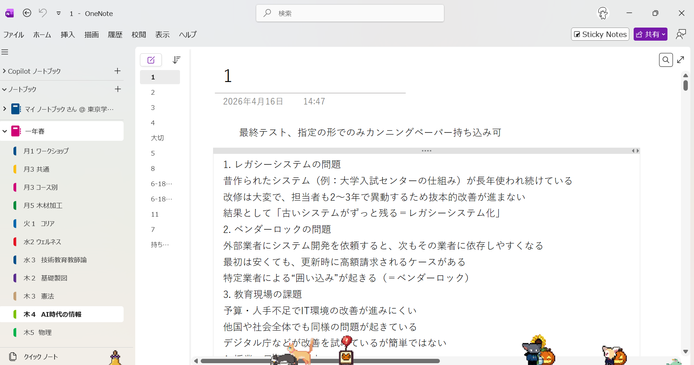

OneNoteで授業ノートを取る
授業中は要点を取りこぼさない
基本的には、先生が言ったことの要点をまとめるだけです。授業中は見やすさより、聞き逃したくないことをメモするのを優先します。先生が口頭で補足したことや、課題・テストの注意点は、あとで見返せるように短く書いておきます。見た目が気になるなら、授業が終わってから整えればOKです。
ノートブック → セクション → ページ
- 半年ごとにノートブックを作る。 「一年春」「一年秋」という感じです。
- 授業ごとにセクションを作る。 名前は「曜日＋時限＋授業名」。たとえば木曜4限なら「木4 AI時代の情報」です。
- 授業のたびにページを追加する。 ページ名は「1」「2」「3」みたいに、何回目の授業かが分かる数字だけで十分です。

打つのが遅いなら手書きでOK
タイピングが授業のペースに追いつかないなら、私は手書きをおすすめします。紙でもiPadでも、自分が早く書ける方でOKです。